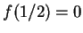
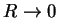
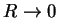
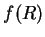
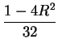
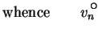
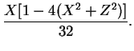

Next: Elliptic section
Up: Sections other than rectangular
Previous: Sections other than rectangular
Contents
Circular section
For a circular section of diameter  ,
,
 =1 and the domain is given by
=1 and the domain is given by
The forced flow solution is
(Stokes 1845; Lamb 1932, p. 585; Bird et al. 1960, p. 46):
A solution to equation (7.20) can be obtained in closed form by
transforming the independent variables  to
to  , where
, where
whence it becomes apparent that (7.20) admits solutions of the
form
 provided
provided
For  and  bounded as
, the solution of this is:
bounded as
, the solution of this is:
|  |
 |
 |
(7.64) |
|  |
|
 |
(7.65) |
This solution was reported by Ostroumov (1958) for the
analogous single fluid heat transfer problem. It is also similar to the
fully developed horizontal flow in a long axially heated cylinder (Klosse &
Ullersma 1973; Bejan & Tien 1978).
Next: Elliptic section
Up: Sections other than rectangular
Previous: Sections other than rectangular
Contents
Geordie McBain
2001-01-27